Matplotlib
[3]:
import matplotlib.pyplot as plt
import numpy as np
Lineplot
[18]:
# Pratique pour les séries
[9]:
t = np.arange(0.0, 2.0, 0.01)
s1 = 1 + np.sin(2*np.pi*t)
s2 = np.cos(2*np.pi*t)
[15]:
plt.plot?
[10]:
plt.plot(t,s1)
plt.show()
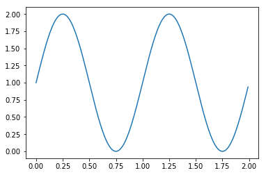
[16]:
plt.plot(t,s1, color = 'green', linestyle = '--')
plt.show()
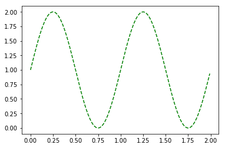
[14]:
plt.plot(t,s1,color='black')
plt.plot(t,s2,color='red')
plt.show()
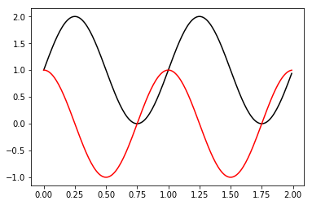
Barplot
[20]:
names = ['group_a','group_b','group_c']
values_1 = [1,10,100]
values_2 = [7,3,10]
[22]:
plt.bar(names,values_1)
plt.show()
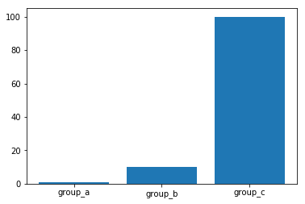
[23]:
plt.barh(names,values_1)
plt.show()
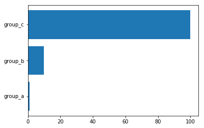
Les histogrammes
[24]:
mu, sigma = 100, 15
x = mu + sigma*np.random.randn(100000)
[25]:
plt.hist(x, 50, facecolor='g') # 50 bins de même taille
plt.show()
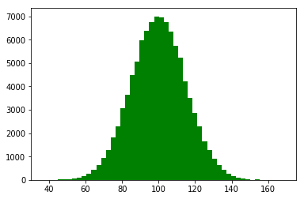
Les densités
[26]:
plt.hist(x, 50, facecolor='g', density=True) # 50 bins de même taille
plt.show()
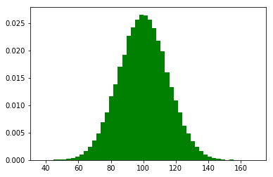
Les pie chart
[48]:
plt.pie?
[33]:
labels = ['Frogs','Hogs','Dogs','Logs'] # c'est un tuple même s'il n'y a pas de parenthèses
sizes = [15,30,45,10]
[35]:
plt.pie(sizes=sizes, labels=labels, autopct='%1.1%%')
plt.show()
---------------------------------------------------------------------------
TypeError Traceback (most recent call last)
<ipython-input-35-295fd4541ef5> in <module>()
----> 1 plt.pie(size=sizes, labels=labels, autopct='%1.1%%')
2 plt.show()
TypeError: pie() got an unexpected keyword argument 'size'
[32]:
explode = (0,0.1,0,0)
plt.pie(sizes, labels=labels, explode = explode,autopct='%1.1%%')
plt.show()
---------------------------------------------------------------------------
ValueError Traceback (most recent call last)
<ipython-input-32-a20dbc6b4e5a> in <module>()
1 explode = (0,0.1,0,0)
----> 2 plt.pie(sizes, labels=labels, explode = explode,autopct='%1.1%%')
3 plt.show()
C:\ProgramData\Anaconda3\lib\site-packages\matplotlib\pyplot.py in pie(x, explode, labels, colors, autopct, pctdistance, shadow, labeldistance, startangle, radius, counterclock, wedgeprops, textprops, center, frame, rotatelabels, hold, data)
3238 radius=radius, counterclock=counterclock,
3239 wedgeprops=wedgeprops, textprops=textprops, center=center,
-> 3240 frame=frame, rotatelabels=rotatelabels, data=data)
3241 finally:
3242 ax._hold = washold
C:\ProgramData\Anaconda3\lib\site-packages\matplotlib\__init__.py in inner(ax, *args, **kwargs)
1715 warnings.warn(msg % (label_namer, func.__name__),
1716 RuntimeWarning, stacklevel=2)
-> 1717 return func(ax, *args, **kwargs)
1718 pre_doc = inner.__doc__
1719 if pre_doc is None:
C:\ProgramData\Anaconda3\lib\site-packages\matplotlib\axes\_axes.py in pie(self, x, explode, labels, colors, autopct, pctdistance, shadow, labeldistance, startangle, radius, counterclock, wedgeprops, textprops, center, frame, rotatelabels)
2651 yt = y + pctdistance * radius * math.sin(thetam)
2652 if isinstance(autopct, six.string_types):
-> 2653 s = autopct % (100. * frac)
2654 elif callable(autopct):
2655 s = autopct(100. * frac)
ValueError: incomplete format
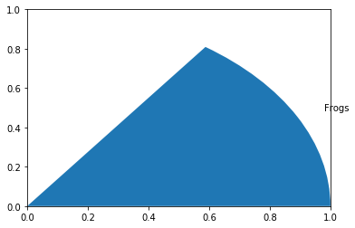
Les boxplots
[37]:
math_test = np.random.randint(1,20+1,30) # 20+1 car la borne supérieure (21) n'est pas prise en compte. On aura ainsi 20
plt.boxplot(math_test, labels=['math_test'])
plt.show()
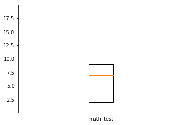
[ ]:
# Ajout des valeurs aberrantes
[41]:
math_test = [18,23,22,30]
plt.boxplot(math_test, whis = 0.6, labels=['math_test'])
plt.show()
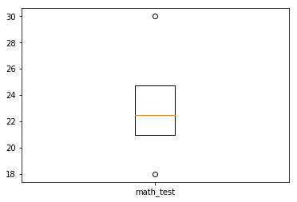
[ ]:
Les scatter plot (pour observer une var en fonction d’une autre)
[43]:
x = np.arange(0.0, 100.0, 2.0)
y = x + np.random.rand(*x.shape)*10.0 # Astuce pour ne pas avoir de pbms de dimensions
[44]:
plt.scatter(x,y)
plt.show()
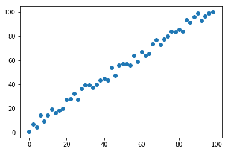
[46]:
area = (15*np.random.rand(50))**2
plt.scatter(x,y,s=area)
plt.show()
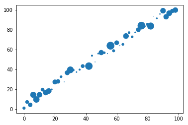
[47]:
c = ['b','r']*25
plt.scatter(x,y,s=area,color=c)
plt.show()

Les titres
[47]:
c = ['b','r']*25
plt.scatter(x,y,s=area,color=c)
plt.show()
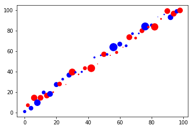
[49]:
c = ['b','r']*25
plt.scatter(x,y,s=area,color=c)
plt.title('Premier graphique')
plt.show()
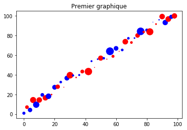
[50]:
c = ['b','r']*25
plt.scatter(x,y,s=area,color=c)
plt.title('Premier graphique')
plt.xlabel('data_viz_1')
plt.show()
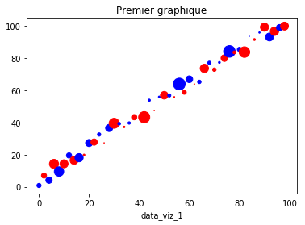
[55]:
# Agrandir un graphique
plt.figure(figsize=(15,10))
c = ['b','r']*25
plt.scatter(x,y,s=area,color=c)
plt.title('Premier graphique')
plt.xlabel('data_viz_1')
plt.ylabel('data_viz_2')
plt.show()
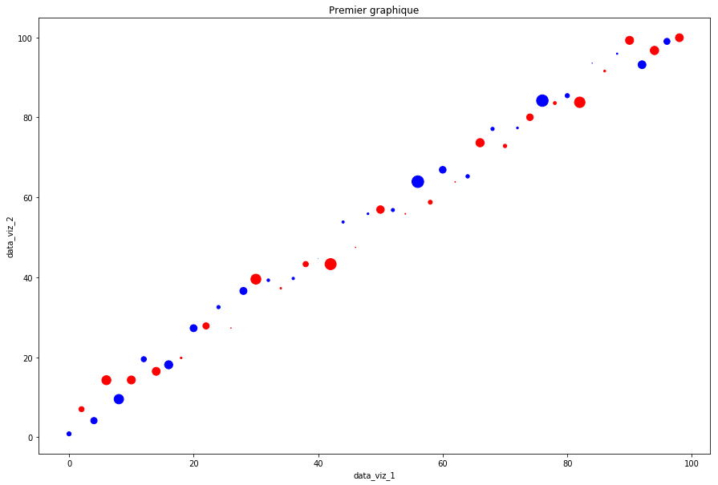
[56]:
## subplot()
plt.figure(figsize=(15,10))
plt.subplot(2,2,1) # On est en 2*2. On se place dans le 1er carré, celui en haut à gauche
c = ['b','r']*25
plt.scatter(x,y,s=area,color=c)
plt.title('Premier graphique')
plt.xlabel('data_viz_1')
plt.ylabel('data_viz_2')
plt.subplot(2,2,4) # On est en 2*2. On se place dans le 1er carré, celui en haut à gauche
c = ['b','r']*25
plt.scatter(x,y,s=area,color=c)
plt.title('Premier graphique')
plt.xlabel('data_viz_1')
plt.ylabel('data_viz_2')
plt.show()
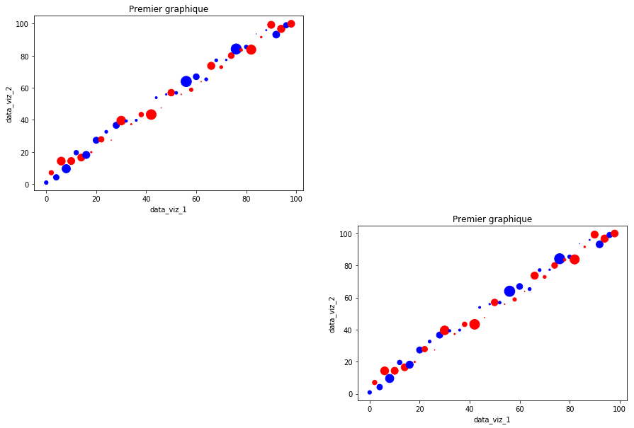
[ ]:
[ ]:
[ ]:
[ ]: